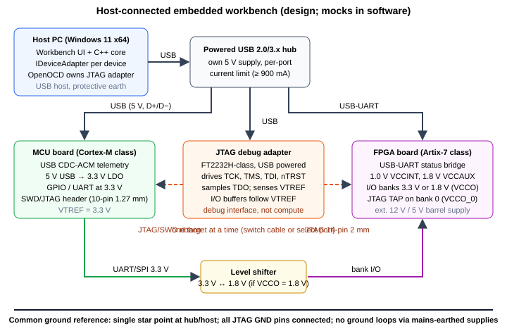

Unified Engineering Workbench v1.0 · C++17 backend on 127.0.0.1
CAD / ANSYS data
Drag = rotate · Shift/right-drag = pan · Wheel = zoom · Click a node to inspect it.
STL and CSV are displayed in the same frame; mesh-to-result registration is not performed.
1D steady thermal FEA
−d/dx(kA dT/dx) = qA, two-node linear elements, T(0) and T(L) prescribed, insulated lateral surface.
Serial vs. parallel batch
Idle.
Embedded workbench (mock)
SIMULATED — no USB, serial or JTAG traffic is generated.
Fault injection makes the next handshake or telemetry read time out, so you can see the recovery path.

Event log
Handwritten backprop check
h = tanh(wx + b), ŷ = vh + c, J = ½(ŷ − y)², x = 1, y = 2.